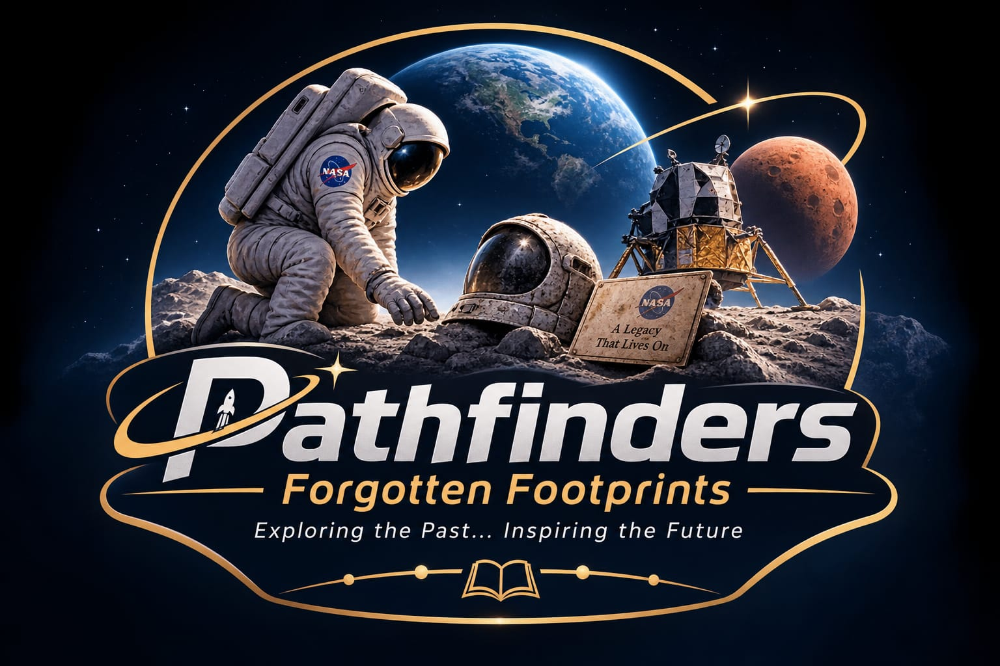

Credits
The people behind the project
A team of students and collaborators working together to build, research, design, and present this project with care and purpose.

FORGOTTENFOOTPRINTS / ARCHIVECredits
A team of students and collaborators working together to build, research, design, and present this project with care and purpose.
This project was created through collaboration, careful research, creative thinking, and hands-on production. Every member contributed in their own way to shape the final experience and its message.
Full-stack developer · media producer · project creator
I’m a passionate student developer with experience in web development, programming, and digital design. I work with HTML, CSS, JavaScript, and modern web technologies, and I enjoy turning creative ideas into practical solutions. I have built projects such as JobMate AI and contributed to Rise of Us as a co-founder and media team leader. I’m also interested in innovation and problem-solving, especially in technology and space-related projects. I would love to join this team to share my skills, learn from others, collaborate, and contribute to building something meaningful and impactful.
Team leader · coordinator · strategic support
Jana Atef is a dedicated and inspiring team leader who brings strong organization, communication, and motivation to the group. She helps guide the team’s direction, keeps progress aligned with the project goals, and creates a positive environment where ideas can grow and teamwork can thrive. Her leadership style combines confidence, responsibility, and support, making her a valuable force behind the project’s success.
Designer · presentation expert · visual creative
Abdelrahman Saad is a highly skilled designer with a strong eye for visual quality, clarity, and presentation. He brings professionalism to every design decision and plays a major role in shaping how the project is presented to others. His work combines creativity, precision, and a strong understanding of aesthetics, making his contribution essential to the project’s polished look and overall impression.
Research lead · ideas developer · content contributor
Rania Hany played an important role in researching, collecting ideas, and shaping the project’s direction. She contributed thoughtful input and helped the team explore meaningful concepts, strong narratives, and research-driven decisions. Her work reflects curiosity, creativity, and an ability to turn ideas into value.
Research · ideation · creative support
Maryam Khaled contributed to the project through research, brainstorming, and creative thinking. She helped develop ideas that gave the project stronger direction and more depth. Her contribution reflects consistency, curiosity, and commitment to producing meaningful work with the team.
Ideas · brainstorming · support
Zeyad Tamer contributed ideas and suggestions that helped the team explore directions and refine concepts. He supported the creative process through brainstorming, constructive feedback, and thoughtful input alongside the rest of the team.